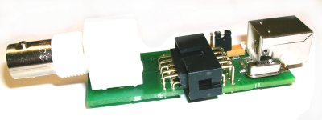
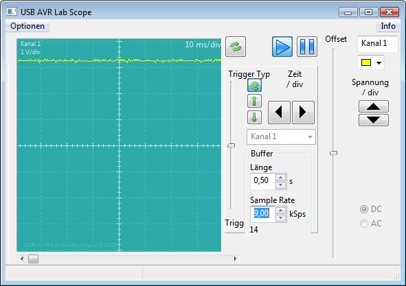

Status: fertig
Die Oszilloskop-Firmware macht aus dem AVR USB Lab ein einfaches Oszilloskop.Zusammen mit einer PC-Software kann man damit Spannungen messen und Signalverl?ufe aufzeichnen.
Download
Die Firmware ist im AVR USB-Lab Tool enthalten.
Die PC Software finden Sie ebenfalls im Downloadbereich
Produktinformation
Pinbelegung
Messpin = Pin 2 der 10-poligen Schnittstelle (Jumper darf nicht gesteckt sein !!!)
GND = Pin 8 oder 10 der 10-poligen Schnittstelle
Benutzung
Verbinden Sie so viele AVR USB Labs, wie Sie Kan?le haben m?chten, mit Ihrem PC. Auf allen muss die Oszilloskop-Firmware geladen sein. Im AVR-USB-Oszi-Tool sehen Sie nun alle Kan?le und k?nnen f?r diese die entsprechenden Einstellungen vornehmen.
Hardware
Es gibt einen Hardwarevorsatz f?r das USB AVR Lab, der das Lab gegen zu hohe / zu niedrige Spannungen sch?tzt. An seine BNC-Buchse kann man einen handels?blichen Tastkopf anschlie?en. Eine erweiterte Messleiterplatte f?r schnellere Messungen ist in Planung.Alternativ k?nnen Sie die Pins auch direkt mit Ihrem Messeingang verbinden, dann allerdings nur bis 10V messen.Achtung: Ohne Vorsatz k?nnen h?here Eingangsspannungen das Lab zerst?ren.

Software
Die Oszilloskop-Software auf dem PC erkennt automatisch alle angeschlossenen Labs und stellt jedes einzelne als Kanal dar. So k?nnen Sie aus Ihrem AVR USB Lab ganz einfach ein 1,2,3,4,5,6-Strahl-Oszilloskop machen.
Screenshots
Betriebsysteme
Windows 98
Windows 2000
Windows XP
Windows Server 2008
Windows Vista
Windows 7